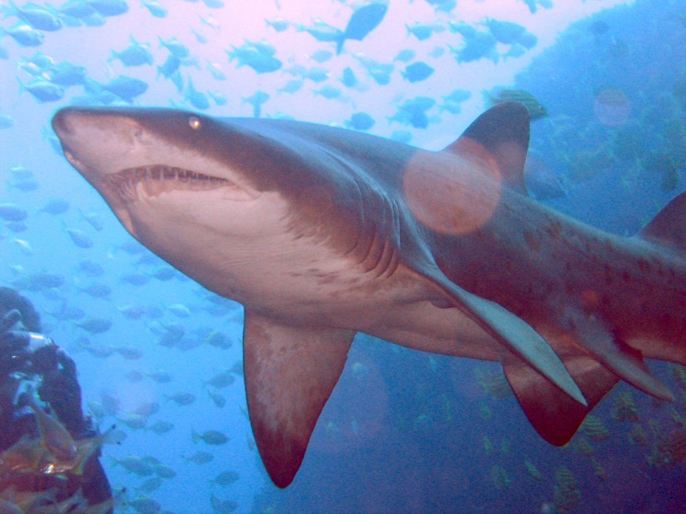
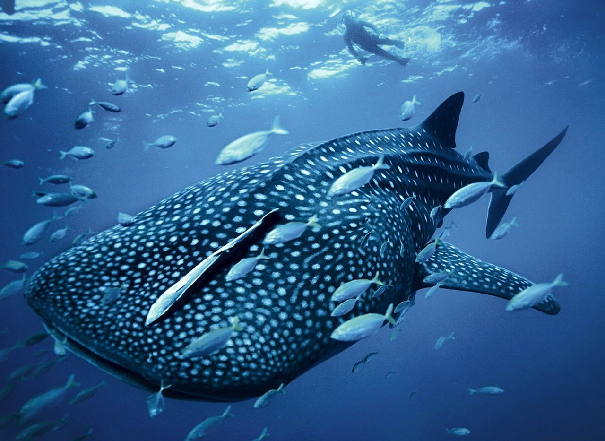
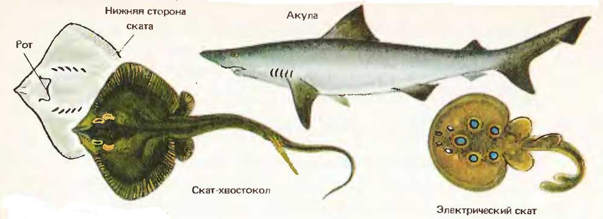

Хрящевые рыбы
класс рыб, водных животных из подтипа позвоночных. Наиболее известные представители: акулы (Selachii) и скаты (Batomorphi). У хрящевых рыб скелет состоит из хрящей, которые, однако, вследствие отложения минералов могут становиться довольно твёрдыми. Хрящевые рыбы не являются, как раньше предполагалось, группой доисторических животных, у которых не состоялось развитие костного скелета. Отличительные особенности
У хрящевых рыб, в отличие от костных, нет плавательного пузыря. В связи с этим, чтобы не опуститься на дно, хрящевые рыбы должны находиться в движении. Кроме того, у хрящевых, в отличие от костных рыб, жабры открываются наружу жаберными щелями; жаберных крышек нет, за исключением химер, у которых жаберные щели прикрыты складкой кожей. Количество жаберных щелей и жаберных дуг обычно 5, реже 6–7. Жабры состоят из жаберной дуги и жаберных пластинок. Кроме того имеются брызгальца, представляющие собой рудиментарную жаберную щель. В отличие от костистых рыб жабры хрящевых рыб не выделяют продукты азотистого обмена и соли. Акулы дышат через рот, а у скатов вода поступает в ротоглоточную полость через открытые клапаны брызгалец, а при их закрытии выходит через жабры.
Хрящевые рыбы имеют плакоидную чешую, которая гомологична зубам всех позвоночных; перемещаясь в ходе эволюции на челюсти, плакоидные чешуи, собственно, и превращаются в зубы у акул и скатов. Плакоидная чешуя состоит из дентина, который формирует основу чешуй, а сверху покрыта эмалью. По химическому составу дентин и эмаль акул сходны с дентином и эмалью зубов человека. Утраченные плакоидные чешуи не возобновляются, но при росте рыбы их количество увеличивается. Плавниковые шипы некоторых хрящевых рыб (например, черноморского катрана) тоже являются преобразованными плакоидными чешуями.
Черепная коробка сплошь хрящевая. В ней выделяют следующие отделы: рострум, обонятельный, глазничный, слуховой и затылочный. Радиалии или птеригофоры, составляющие основу спинных и анального плавников, хрящевые, плавниковые лучи представляют собой эластотрихии — кожные эластиновые нити. Хвостовой плавник гетероцеркальный, представлен эластотрихиями, поддерживаемыми позвоночником. Плечевой пояс представлен хрящевой дугой, в которой выделяют лопаточную (дорсальную) и коракоидную (вентральную) части. Скелет конечности состоит из трех базалий, радиалий, в свою очередь состоящих из двух-трех хрящиков, и эластотрихий, которые поддерживают кожную лопасть. Тазовый пояс представлен хрящевой пластиной, к которой присоединён скелет брюшного плавника. Он состоит из длинного базального луча, радиалий и эластотрихий. У самцов задние концы базалий и радиалий образуют птеригоподии — аппарат для совокупления. От туловищной мускулатуры костных рыб мышцы хрящевых рыб отличаются слабой дифференциацией. В мышцах наблюдается повышенное содержание мочевины: до 1,5–2,8 % у морских видов и до 0,7 % у пресноводных.
Кровеносная система хрящевых рыб похожа на кровеносную систему круглоротых. Кровь красная благодаря наличию в ней эритроцитов (красных кровяных телец) и пигмента — гемоглобина. Имеется кроветворный орган — селезёнка. Артериальный конус соединяется с желудочком, его стенка состоит из поперечно-полосатой мускулатуры, на внутренней поверхности расположена система клапанов. Кровяное давление в брюшной аорте колеблется в пределах 7—45 мм рт. ст, что ниже по сравнению с костистыми рыбами (18—120 мм рт. ст.). Лимфатические сердца и боковые лимфатические сосуды отсутствуют. Органами выделения служат туловищные почки в виде двух тёмно-красных полос, тянущихся вдоль позвоночника. У некоторых видов в почках сохранились мерцательные воронки. Основным компонентом мочи является мочевина, а не аммиак, как у костистых рыб. Мочеточником у самок хрящевых рыб служит вольфов канал, образованный из пронефрического канала. У самцов на ранней стадии он выполняет функции мочеточника и семяпровода, во взрослом состоянии образуется самостоятельный мочеточник, который через мочеполовой синус открывается в клоаку, а семяпроводом служит вольфов канал. Морские хрящевые рыбы живут в изотонической среде (осмотическое давление в тканях равно внешнему давлению). В их крови и тканевых жидкостях удерживаются мочевина и соли. Мочи выделяется мало (2—50 мл на 1 кг массы в сутки), а для выведения излишков солей имеется ректальная железа, которая открывается в прямую кишку.